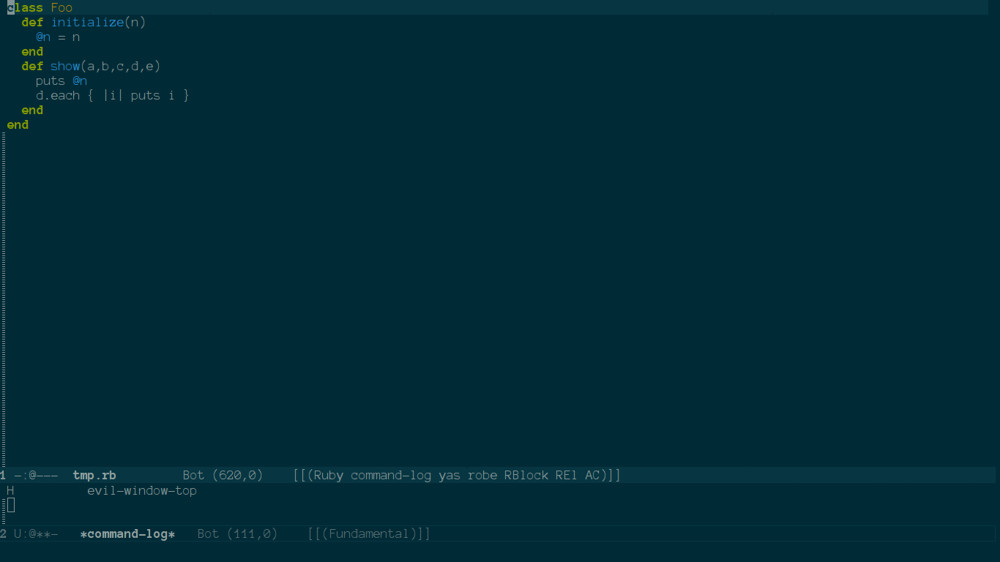

Description
Emacs evil-mode % 功能加上 Ruby block 的配對，例如將光標放在 class Foo 上後鍵入 % 可以跳轉至相符的 end 。
Example

Source Code
;; Require package: (evil) (evil-define-motion evil-ruby-jump-item (count) :jump t :type inclusive (cond ((string-match ruby-block-beg-re (current-word)) (ruby-end-of-block count)) ((string-match ruby-block-end-re (current-word)) (ruby-beginning-of-block count)) (t (evil-jump-item count)))) (add-hook 'ruby-mode-hook (lambda () (define-key evil-normal-state-local-map "%" 'evil-ruby-jump-item) (define-key evil-motion-state-local-map "%" 'evil-ruby-jump-item)))